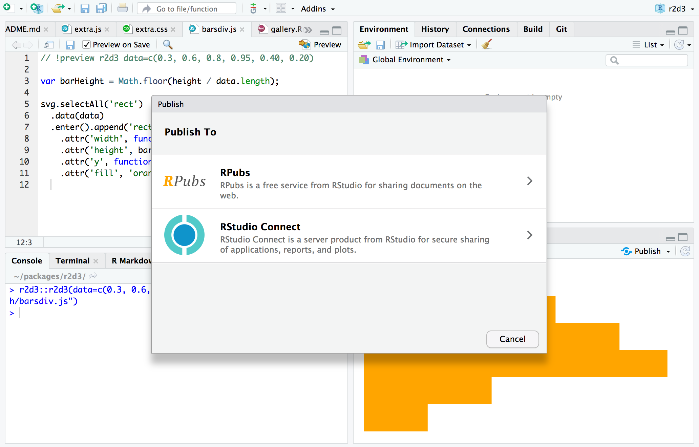

Publishing D3 Visualizations
Source:vignettes/publishing.Rmd
Overview
There are a variety of ways to publish D3 visualizations, including:
Saving as a standalone HTML file
Publishing to a service like RPubs
Exporting to a static PNG version of the visualization
Copying to the clipboard and pasting into another application
Including within an R Markdown document or dashboard
Including within a Shiny application
This article describes each of these techniques for publishing visualizations
Publishing HTML
Save as HTML
You can use the save_d3_html() function to save a D3 visualization as an HTML file. For example:
library(r2d3)
viz <- r2d3(data=c(0.3, 0.6, 0.8, 0.95, 0.40, 0.20), script = "barchart.js")
save_d3_html(viz, filename = "viz.html")By default, the HTML file will be self-contained (all CSS and JavaScript dependencies will be embedded with the file) so that it’s easy to share. If you want the dependencies written to a separate directory you can set selfcontained = FALSE. For example:
library(r2d3)
viz <- r2d3(data=c(0.3, 0.6, 0.8, 0.95, 0.40, 0.20), script = "barchart.js")
save_d3_html(viz, filename = "viz.html", selfcontained = FALSE)Setting selfcontained = FALSE is useful if you want to embed your D3 visualization within another HTML page since it separates the visualization itself from various link and script dependencies that need to be placed in the HTML head.
RPubs / RStudio Connect
You can also publish visualizations to RPubs or RStudio Connect. To do this, click the Publish button located in the top right of the RStudio Viewer pane:

Static Images
The RStudio Viewer pane has an Export menu that enables you to export D3 visualizations as PNG files as well as copy visualizations to the clipboard:

The export dialog enables you to customize the size of the exported or copied image:

R Markdown
You can include D3 visualizations in an R Markdown document or R Notebook. You can do this by calling the r2d3() function from within an R code chunk:
---
output: html_document
---
```{r}
library(r2d3)
r2d3(data=c(0.3, 0.6, 0.8, 0.95, 0.40, 0.20), script = "barchart.js")
```
You can also include D3 visualization code inline using the d3 R Markdown engine:
```{r setup}
library(r2d3)
bars <- c(10, 20, 30)
``````{d3 data=bars, options=list(color = 'orange')}
svg.selectAll('rect')
.data(data)
.enter()
.append('rect')
.attr('width', function(d) { return d * 10; })
.attr('height', '20px')
.attr('y', function(d, i) { return i * 22; })
.attr('fill', options.color);
```
Note that in order to use the d3 engine you need to add library(r2d3) to the setup chunk (as illustrated above).
flexdashboard
The flexdashboard R Markdown format is a great way to publish a set of related D3 visualizations. You can use flexdashbaord to combine D3 visualizations with narrative, data tables, other htmlwidgets, and static R plots:

Check out the flexdashboard online documentation for additional details.
Shiny applications
The renderD3() and d3Output() functions enable you to include D3 visualizations within Shiny applications:
library(shiny)
library(r2d3)
ui <- fluidPage(
inputPanel(
sliderInput("bar_max", label = "Max:",
min = 10, max = 110, value = 10, step = 20)
),
d3Output("d3")
)
server <- function(input, output) {
output$d3 <- renderD3({
r2d3(
floor(runif(5, 5, input$bar_max)),
system.file("baranims.js", package = "r2d3")
)
})
}
shinyApp(ui = ui, server = server)